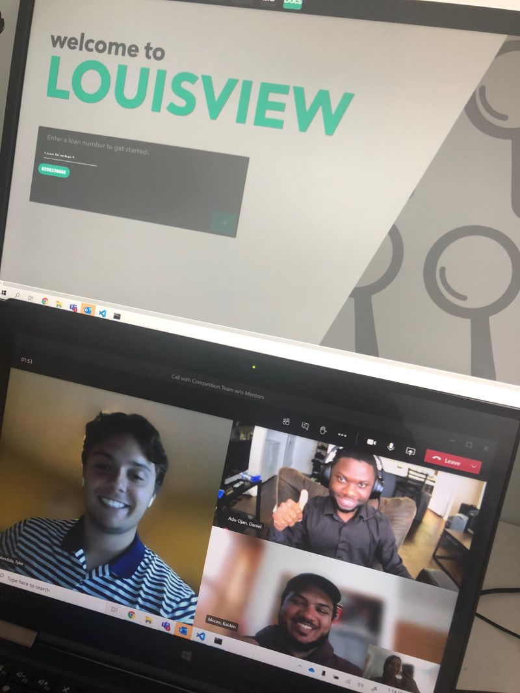
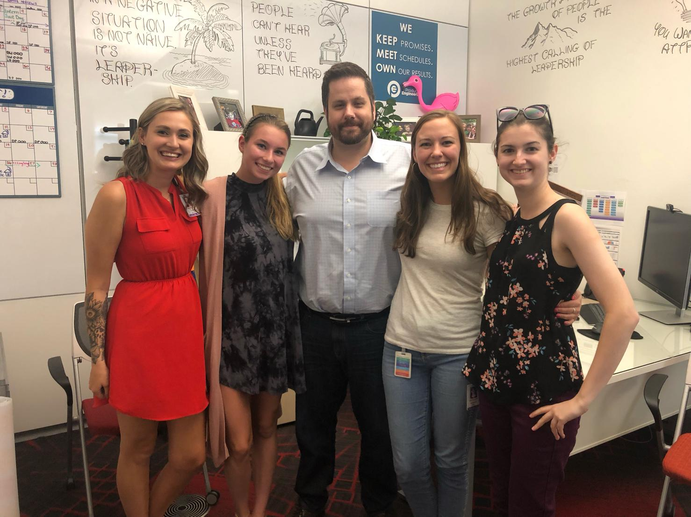
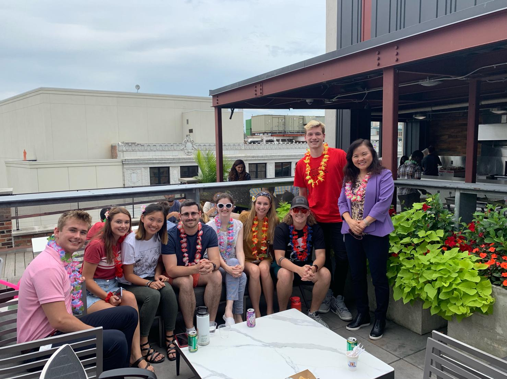
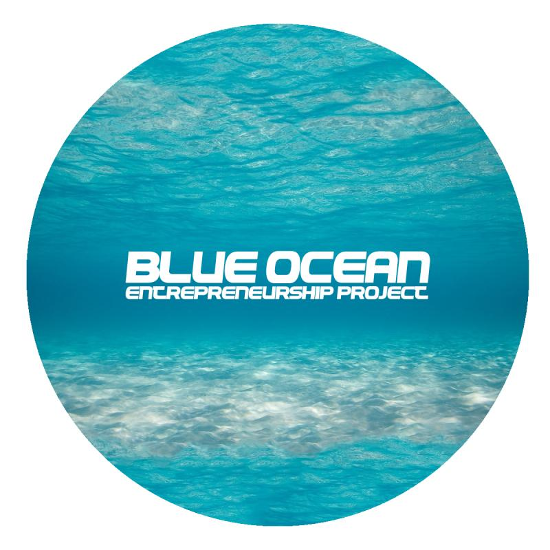
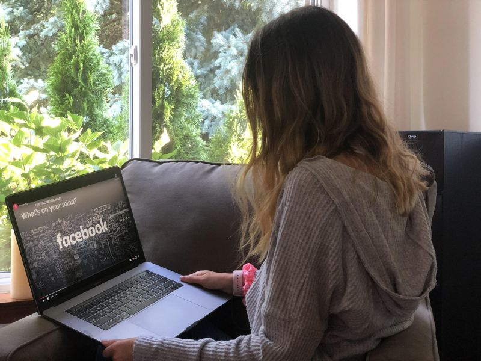
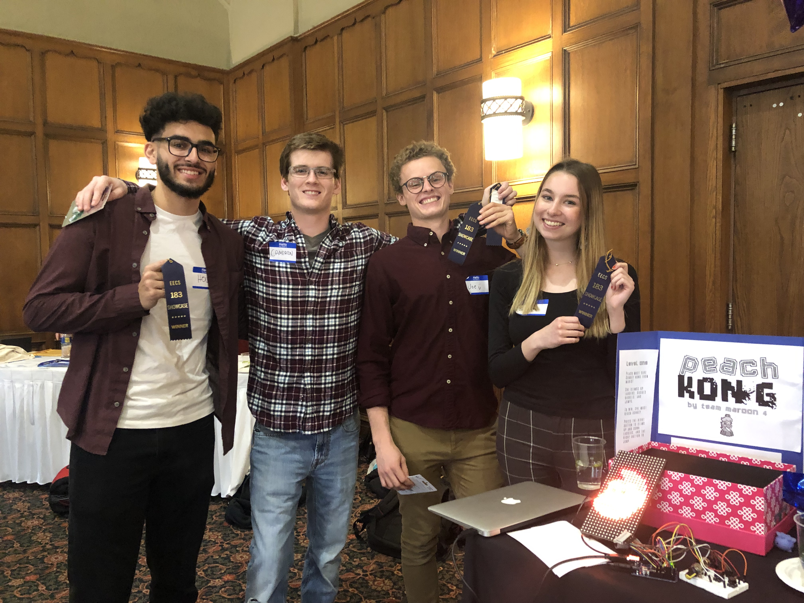

trucked upFor an entrepreneurship class (ES 212: Entrepreneurial Business Basics), I created a mock application in order to
bring my team's idea to life. While my team and I created the business plan and pitch deck for our idea together, I took the
initiative to create a demo.

software engineering internshipI worked as a software engineering intern during the summer of 2020. Although the internship was remote, I was able to work
with a team of three other interns to create a fully functional application that went into production. Our application, meant to streamline
the document viewing process, ended up winning the intern competition.
starting a businessDuring one of my entrepreneurship courses (PSYCH 223: Entrepreneurial Creativity), three of my peers and I created a company
that promoted sustainability. A customer would purchase a resuable cup, and if they used that reusable cup at certain restaurants, they
would receive a discount. It was essentially a membership service that promoted sustainability. We were able to get several restaurants
on board and actually created the cups. The presentation above actually includes my roommate holding a cup! We created social media, held
events at local establishments, and made a profit. We also made it to the final round of a pitching competition with our company.

special projects internshipIn the summer of 2019, I intered as a special projects intern on the technology team at Quicken Loans. Here, I directly worked
on Brian Woodring's (pictured) projects. At the time, he was the Chief Technology Officer and currently holds the position of Chief Information
Officer. Throughout the summer, I worked on projects such as the analysis and presentation of survey results and the design of communication
for the CTO. I also participated in Hack Week, where I helped create a mentorship program.

internship connectionsAt my summer 2019 internship, I also had the opportunity to make lifelong friends and work with the Chief Information Officer
at the time, Linglong He (pictured). I created a presentation analyzing the results of the quarterly technology employee survey for Linglong after
I first created one for Brian Woodring. The presentation was shown to all technology leadership, including those at the C-level.

entrepreneurship competition judgeWhile taking an entrepreneurship course (ENTR 490: Organizational Management in Startups), I was asked by the instructor
to help judge a highschool entrepreneurship competition. This was a very rewarding experience and I loved seeing the amazing potential
that all submissions had.

facebook wayfinderIn the summer of 2020, I was invited to attend the Facebook Wayfinder conference. Wayfinder is a three-day program that helps
students find their way in the world of tech, design, and engineering. With the "Choose Your Own Adventure" format that the Wayfinder
team used, I was able to continue working my internship while attending events before or after the workday. My favorite part of this
experience was being able to speak to Facebook employees 1:1 to ask more personal questions regarding their role, their journey, and their passions.

programming competition winnerDuring my first programming course (EECS 183: Elementary Programming Concepts). My group and I used C++ and Arduino to create
a video game on an LED screen. We created three interactive levels, and were chosen by the EECS 183 team and J.P. Morgan Chase as the grand prize winners.project demoThe winning project that my group and I created during the EECS 183 final project showcase.